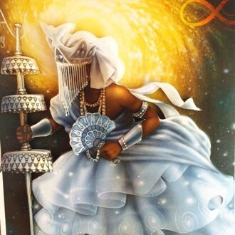
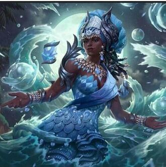
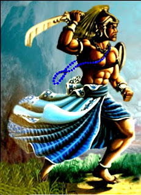
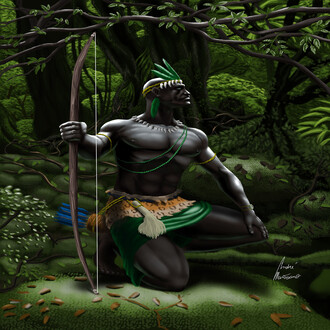
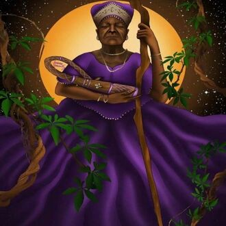
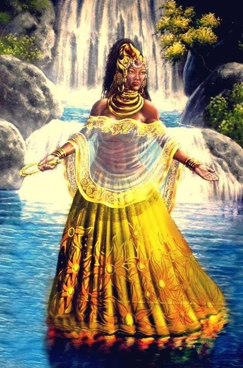
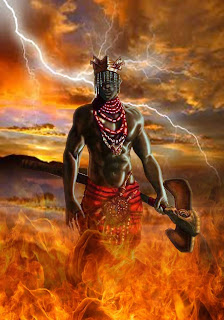
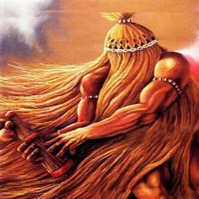
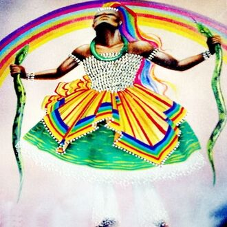

-
Oxalá
Descrição
Oxalá é o Orixá da paz, da criação e da harmonia. Ele é conhecido como o grande pai e protetor da humanidade. Representado muitas vezes com vestes brancas e um cajado, Oxalá simboliza a pureza e a sabedoria divina. Além de ser o criador do mundo e de todos os seres vivos, Oxalá é considerado o juiz supremo, responsável por manter a ordem e o equilíbrio no universo. Ele é invocado para promover a paz interior, a união entre os povos e a justiça divina.
-
Iemanjá
Descrição
Iemanjá é a Orixá dos mares, das águas salgadas e da maternidade. Ela é reverenciada como a mãe de todos os seres vivos, sendo considerada a protetora dos pescadores e navegantes. Representada com vestes azuis e segurando um leque de prata, Iemanjá simboliza a fertilidade, a intuição e a força feminina. Além de ser a guardiã dos laços familiares e das emoções, Iemanjá é invocada para promover a proteção, a harmonia familiar e a realização dos desejos.
-
Ogum
Descrição
Ogum é conhecido como o Orixá guerreiro, protetor dos caminhos, das batalhas e das lutas. Ele é associado à perseverança, coragem, justiça e disciplina. Ogum é representado como um guerreiro valente, com uma lança em uma mão e uma espada na outra. Ele é o defensor das causas justas e está sempre disposto a auxiliar aqueles que o invocam, seja na superação de desafios ou na proteção contra energias negativas.
-
Oxossi
Descrição/h3>
Oxóssi é o Orixá da caça, da fartura e da prosperidade. Ele é conhecido como um grande caçador, sendo representado segurando um arco e uma flecha. Além de ser o patrono da caça, Oxóssi também governa a natureza, especialmente as matas e florestas. Ele é um Orixá ligado à sabedoria, à intuição e ao equilíbrio. Oxóssi é invocado para proteção, abundância e conexão com a natureza.
-
Nanã
Descrição
Nanã é a Orixá da fertilidade, da ancestralidade e do equilíbrio. Ela é reverenciada como a Mãe Primordial das águas tranquilas e profundas, simbolizando a sabedoria e a serenidade. Representada muitas vezes com vestes azuis e brancas, Nanã é associada à fertilidade da terra e à renovação da vida. Além disso, ela é vista como guardiã dos ancestrais e protetora das crianças. Nanã é invocada para promover a estabilidade emocional, a harmonia familiar e a conexão com as raízes ancestrais
-
Oxum
Descrição
Oxum é a Orixá do amor, da fertilidade e da beleza. Ela é reverenciada como a deusa das águas doces, sendo associada aos rios, cachoeiras e fontes. Representada com vestes amarelas e segurando um espelho e um leque, Oxum simboliza a feminilidade, a sensualidade e o poder da maternidade. Além de ser a protetora das gestantes e das crianças, Oxum é considerada a rainha do amor e da prosperidade. Ela é invocada para promover o amor próprio, a fertilidade e a abundância em todas as áreas da vida.
-
Xangô
Descrição
Xangô é o Orixá da justiça, do trovão e da virilidade. Ele é reverenciado como o rei dos reis e o senhor da pedreira, representando a força e a autoridade. Comumente retratado com vestes vermelhas e um machado de duas lâminas, Xangô simboliza o equilíbrio entre a justiça e a compaixão. Além de ser o juiz supremo dos conflitos humanos e divinos, Xangô é considerado o protetor das famílias e o guardião da moralidade. Ele é invocado para promover a coragem, a determinação e a prosperidade, bem como para resolver disputas e garantir a paz social.
-
Iansã
Descrição
Iansã é a Orixá dos ventos, das tempestades e das transformações. Ela é reverenciada como a guerreira dos caminhos, simbolizando a força, a coragem e a determinação. Representada com vestes vermelhas e um espada, Iansã é associada à energia do raio e do trovão, sendo considerada a rainha dos raios e tempestades. Além de ser a protetora dos viajantes e dos guerreiros, Iansã é invocada para promover a renovação, a libertação e o progresso espiritual. Ela é vista como uma deusa dinâmica e poderosa, capaz de desbravar novos caminhos e superar desafios com bravura e sabedoria
-
Omolu
Descrição
Omulu é o Orixá da saúde, da cura e da transformação. Ele é reverenciado como o senhor das doenças e das epidemias, mas também como o protetor dos doentes e dos desamparados. Representado com vestes escuras e segurando um cajado, Omulu simboliza a sabedoria ancestral e a capacidade de purificação. Ele é associado à terra e aos cemitérios, sendo considerado o guardião dos espíritos dos mortos e o regenerador das energias negativas. Além de ser invocado para a cura física e espiritual, Omulu é visto como o símbolo da transformação e da renovação, representando a possibilidade de superação e regeneração em meio às adversidades.
-
Oxumaré
Descrição
Oxumaré é o Orixá do arco-íris, da renovação e da dualidade. Ele é reverenciado como o senhor das serpentes, simbolizando a conexão entre o céu e a terra. Representado com vestes multicoloridas e segurando uma serpente, Oxumaré personifica a mudança constante e a transformação cíclica da vida. Ele é considerado o guardião dos ciclos naturais, regendo as estações do ano e as fases da lua. Além de ser invocado para a renovação espiritual e a busca por equilíbrio, Oxumaré é visto como o protetor dos viajantes e o mensageiro entre os mundos espiritual e material. Ele representa a dualidade entre o visível e o invisível, o finito e o infinito, ensinando-nos a aceitar e valorizar a diversidade e a impermanência da existência.